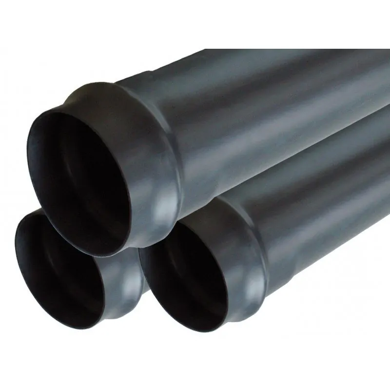

Inicio › Tubos y fittings › Tubería PVC Colector

Tubos de PVC
Tubería PVC Colector
PVC negro para conducción gravitacional de residuos industriales líquidos, aguas lluvias y alcantarillado enterrado.
- Fabricante chileno desde 1984
- Empresa con ISO 9001:2015
- Marca de Conformidad CESMEC – Bureau Veritas
Descargar ficha técnicaPDF con medidas, normas y uso
¿Prefieres llamar? +56 9 8953 0167 · Lunes a viernes, 09:00 a 18:00 hrs
Información técnica
- La Tubería Colector de Plastiservi se fabrica en policloruro de vinilo (PVC) de color negro, en largos de 6 metros.
- Impide las filtraciones, evitando el ingreso y la salida de aguas servidas.
- Su función principal es conducir y evacuar por gravedad residuos industriales líquidos y aguas lluvias, y se usa en redes de alcantarillado público enterrado.
- Las uniones de tuberías y accesorios son de tipo Anger (con goma): de gran calidad y bajo mantenimiento, dan cierta flexibilidad sin perder el sello hermético, y absorben las contracciones y dilataciones térmicas de la tubería.
Cómo cotizar
- 1Elige la medida (diámetro).
- 2Indica la cantidad y, si quieres, la obra o el plazo.
- 3Envíalo por WhatsApp o por el formulario y te respondemos con la cotización.
Por qué Plastiservi
- Fabricante desde 1984Empresa familiar chilena. Tubos y fittings fabricados en nuestra planta de San Bernardo.
- ISO 9001:2015Sistema de gestión de calidad certificado.
- Marca de ConformidadLas líneas de PVC cuentan con Marca de Conformidad Permanente, modelo ISO-CASCO 5, otorgada por CESMEC – Bureau Veritas.
- Ficha técnicaDescarga la ficha técnica en PDF para tu especificación u obra.
Cotiza tu Tubería PVC Colector
¿Cuánto necesitas?
Cuéntanos medida y cantidad, y te respondemos a la brevedad con tu cotización.
Línea tubos: +56 9 8953 0167 · 2 2554 7602
Lunes a viernes, 09:00 a 18:00 hrs